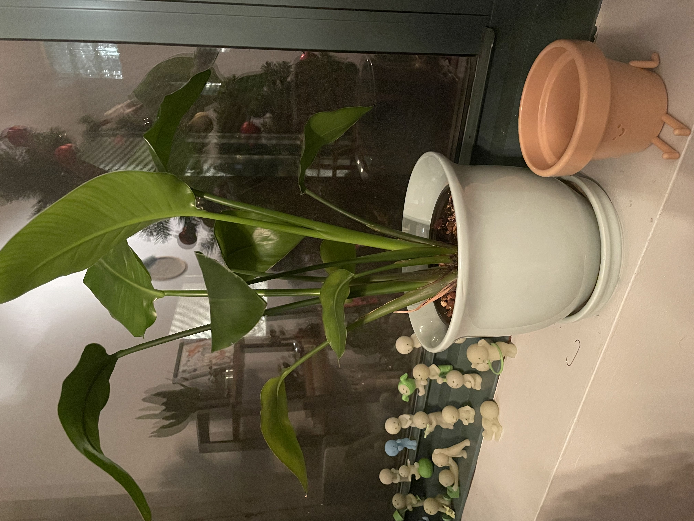

Peter Nguyen
🚀 Welcome to my 2024!
What you're not changing you're choosing
-Jason Derulo
📜 2024: A Year in Review
🌸 Spring Semester Highlights
The "wisdom teeth scare" of 2024 — My teeth were hurting for months, then suddenly, the pain disappeared. They’re still in there.
🌞 Summer Highlights
Successfully repotted my plant. It’s thriving now and makes the window sill feel alive.
🍂 Fall Semester Highlights
Turned 21! Lost $100 gambling that same night. My friend immortalized the moment by writing a song about it.
❄️ Winter Break Highlights
Vegas.
🌟 Goals for 2025
- Expand on 3D websites to push the boundaries of web design.
- Go on a memorable hike in Oregon or Washington to connect with nature.
- Establish a normal sleep schedule to improve overall well-being.
- Start packing lunches regularly to eat healthier and save money.
My plant

-Bird of Paradise
🌌 Scrolling Journey
🌀 The Torus
As you pass through the torus, think of spring 2024 — the uncertainties of wisdom teeth and the realization that sometimes, time is the best remedy.
🎲 The Cube
My face on a cube represents the gamble of life, like my $100 loss at 21. Every side has a story, and you learn from the rolls.
🌕 The Moon
The moon signifies reflection and ambition. Winter in Vegas reminded me that life is about the experiences we chase.
Thanks for visiting!